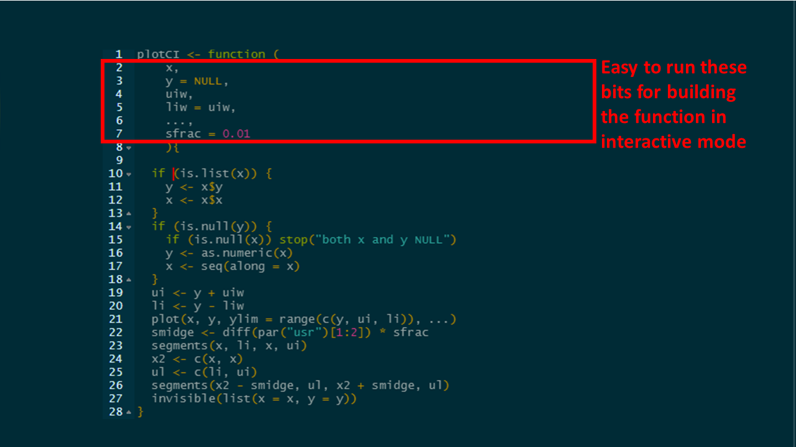

4.7 Tip: put each argument on a separate line

- The argument
xhas no default value, however the argumentyhas the default setting ofNULLwhich means that if the analyst does not supply any value forywhen the function is called, theny = NULL. - Likewise
uiwhas no default whereasliwdoes. Ifliwis not supplied then it will take the value ofuiw.